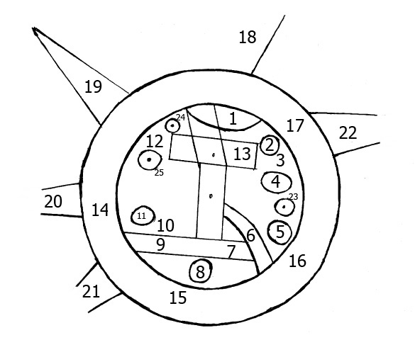

Babylonian Map of the World

- Find Name
- Babylonian Map of the World
- Historical Period
- Neo-Babylonian Period (626-539 BC)
- Artifact Date
- 6th century BC (c. 600 BC)
- Date Discovered
- 1882 (found at Sippar)
- Discovery Location
- Sippar, Iraq
- Current Location
- British Museum, London
- Timeline Era
- Exile
- Description
- A small clay tablet incised with the Babylonian view of the world: a flat disc with Babylon at its centre, ringed by a bitter river and triangular regions beyond. It is the oldest surviving map of the world, and it shows the cosmos as Israel's neighbours pictured it during the exile.
- Biblical Significance
- Genesis speaks of a firmament and waters above and below in the language of its world, and this tablet shows what that language pictured. It helps readers hear Genesis 1 as its first hearers did — not as a science lesson, but as a claim that the one God, not the gods of Babylon, ordered all that is.
- Evidence Class
- Contextual
- Interpretations
- Scholars agree the tablet is a 6th-century Babylonian world map; its damaged outer regions are reconstructed, and its value for Genesis is cosmological background, not geography.
- Scripture Illuminated
- Related Books
- Related Places
- Alternative Names
- Imago Mundi
Awaiting Review Not yet checked against scholarly sources. Treat its claims as provisional until this entry is reviewed. About verification
Last reviewed: not yet reviewed